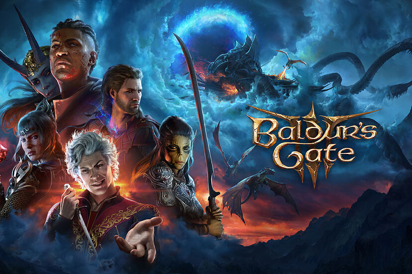

Baldur’s Gate 3 se corona como ganador de Juego del Año (GOTY)

Baldur’s Gate 3 se lanzó el 3 de agosto de este año, luego de un extenso período en Early Access de
Steam. Desde ese entonces, el juego comenzó a cosechar popularidad entre los fanáticos del género.
Con
una narrativa que toma en cuenta hasta el más mínimo detalle de la forma en la que los jugadores
atraviesan la aventura, un elenco de personajes inolvidable, y un apartado técnico increíble,
Baldur’s
Gate 3 conquistó a millones con su lanzamiento oficial. Posteriormente a su salida en PC, el juego
llegó
a PlayStation 5 en septiembre, y el día de hoy se anunció que llegará a Xbox Series X y Xbox Series
S
este de diciembre.
Así es 'OD', el nuevo juego de terror de Hideo Kojima
El creativo japonés Hideo Kojima ha vuelto a subir al escenario de los The Game Awards para anunciar
un
nuevo juego de terror exclusivo para Xbox y PC. Se llama OD y, aunque ya tenemos un primer tráiler,
es
un poco difícil saber cómo será o de qué irá. Lo que queda claro con este vídeo de minuto y medio es
que
el castin de actores es de los buenos.
God of War Ragnarok: Valhalla fue anunciado en The Game Awards
La nueva expansión tendrá un enfoque a la jugabilidad roguelike
Durante la transmisión del evento, The Game Awards, fue anunciado God of War Ragnarok: Valhalla. El
juego
se considera como un epilogo de God of War Ragnarok en el que seguirá a Kratos en un viaje persona y
reflexivo. La descripción de este tráiler revelador dice lo siguiente "Embárcate con Kratos en
Valhalla
en un viaje profundamente personal y reflexivo hacia un futuro que nunca creyó posible. Domina los
desafíos de la mente y el cuerpo en una aventura que se desvela, que combina el querido combate de
God
of War Ragnarok con elementos completamente nuevos inspirados en el género roguelike".